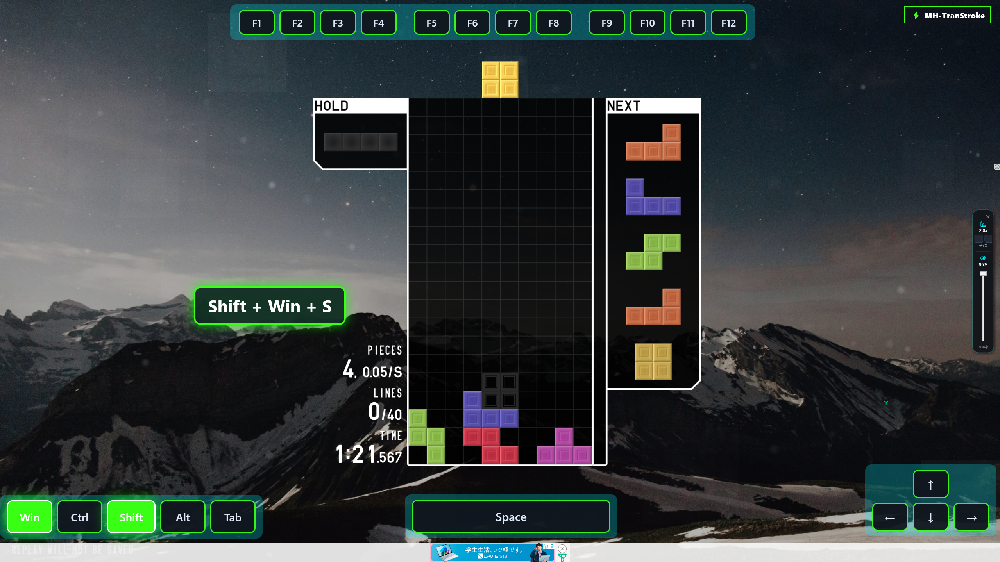

MH-TranStroke
Real-time keystroke overlay tool for livestreams and tutorial videos.

Overview
MH-TranStroke is a lightweight Windows overlay utility designed for gaming livestreams, programming or 3D modeling streams, and tutorial videos. It displays which keys and shortcut combinations are being pressed on screen in real time.
With full click-through support, the overlay never interrupts mouse clicks or drags in underlying games and applications. It also includes a Stealth Mode to instantly hide keystroke displays when entering passwords or sensitive information.
Main Features
- Full Click-Through: Continue playing games or working in apps right through the overlay without interruption.
- Fixed Key HUD & Dynamic Strokes: Fixed HUD groups for Function keys (F1–F12), Modifiers, Space, and Arrow keys, plus dynamic pop-up display for characters, symbols, and merged shortcuts (such as
Ctrl + C). - Three Visual Styles: Choose from clean Simple, glowing Neon, or animated Gaming RGB modes (Sync, Wave, Reactive).
- Flexible Layout Customization: Drag any key group anywhere on screen and resize individually. Layouts are automatically saved per display and resolution.
- Multi-Monitor Simultaneous Display: Show keystrokes across multiple selected monitors at once, automatically adapting to cable changes or resolution updates.
- Privacy Protection (Stealth Mode): Quickly disable/dim keystroke display using
Shift + F12or the system tray icon. - Local-Only & Multilingual: All keystroke processing stays strictly on your local device with no external data transmission. Supports Japanese and English.
Basic Usage
- Launch: For the BOOTH Portable Edition, extract the ZIP archive and run
MHTranStroke.exe(no installation required). For the Microsoft Store Edition, launch it from the Start menu after installing. - Use Normally: The key HUD appears on screen. Because it is click-through, you can interact with games, browsers, or creative tools behind it as usual.
- Open Menu: Right-click the MH-TranStroke icon in the system tray (bottom-right of your taskbar) to open Settings, Size & Position Edit Mode, or Exit. Left-click the tray icon to quickly toggle Stealth Mode.
- Streaming & Recording (OBS Studio, etc.): MH-TranStroke renders directly as a desktop overlay. When using Display Capture in OBS Studio or similar software, the keystrokes are captured along with your screen. (If you use Game Capture or single-window Window Capture only, desktop overlays will not appear in that source.)
Shortcuts & Quick Actions
You can switch modes quickly during streams or recording using keyboard shortcuts or quick UI controls.
| Toggle Stealth Mode |
Shift + F12 (can be changed to double-press in Settings)Or left-click the system tray icon / double-left-click the top-right “MH-TranStroke” logo |
|---|---|
| Toggle Size & Position Edit Mode |
Shift + F11 (can be changed to double-press in Settings)Or select “📐 Size & Position Adjustment Mode” from the tray right-click menu |
| Top-Right Logo Actions |
Left-drag: Move the logo badge Double-left-click: Toggle Stealth Mode Right-click: Open quick menu (Settings, Hide Logo, etc.) |
Shift + F12 again to resume normal display.
Settings Reference
Open “⚙ Settings” from the system tray right-click menu to customize everything with live preview. The buttons at the top-right of the Settings window let you switch Language (Auto / JA / EN) and UI Theme (Auto / Dark / Light).
Target Displays (Multi-Monitor Simultaneous)
Simultaneously displays keystrokes on all checked monitors. Use “All Screens” or “Primary Only” for quick selection. The overlay automatically adapts to monitor connection/disconnection, and layouts are saved separately per display, resolution, and DPI scale.
Stealth Mode Toggle & Shortcut Options
If Shift + F11 or Shift + F12 conflicts with another game or application, enable “Require double-press of function keys for shortcuts” to prevent accidental triggers while keeping quick double-tap access.
Size & Position Edit Mode
Enabling this mode temporarily turns off click-through so you can freely arrange the five key groups (Function Keys, Modifier Keys, Space Key, Arrow Keys, and Dynamic Strokes).
- Individual Move & Resize: Drag any group frame to reposition it. Scroll the mouse wheel over a group or drag its bottom-right grip to resize individually (0.5x–3.0x).
- Global Scale Presets: Resize all groups together using the
0.8x,1.0x (Default),1.25x,1.5x,1.75x, and2.0xpreset buttons. - Reset Layout: Click “🔄 Reset Size and Position to Default” to restore the default layout for the current display.
Overall Opacity & Quick Slider
- Opacity: Adjust overall overlay opacity from 20% to 100% (default: 85%).
- Show vertical opacity slider on screen right: Keeps a compact vertical bar on the right edge of the screen for quick opacity and global scale (
+/-and1.0xreset) adjustments during a stream.
Visual Style & Neon Color
- Simple: Clean monochrome translucent style suited for tutorials and calm work streams.
- Neon: Glowing neon-tube effect. Pick any color with the HEX color picker or choose from five presets (Cyber Cyan, Neon Magenta, Gaming Green, Sunset Orange, White).
- Gaming: 7-color RGB gradient animation with three modes: Sync (Cycle), Wave (Flow), and Reactive (Keypress).
Frame Background
Choose the key HUD background from Dark Translucent, Transparent, or Custom Color (with alpha channel transparency control).
Modifier Keys Order
Customize the order of the bottom-left modifier keys (Tab, Win, Ctrl, Shift, Alt) to match your keyboard layout. Drag and drop the buttons, click ◀ / ▶, or select a preset such as Programmer, Standard Full, Gaming, Windows Standard, or Without Tab.
Key Visibility
Toggle each overlay element individually on or off:
- Show App Name Logo on Top Right
- Show Function Keys (F1-F12)
- Show Modifier Keys (Win, Ctrl, Shift, Alt)
- Show Space Key
- Show Arrow Keys (↑ ← ↓ →)
- Show Dynamic Strokes (Characters & Shortcuts)
Specifications & Requirements
| Supported OS | Windows 10 / Windows 11 (64-bit) |
|---|---|
| Distribution | BOOTH (Portable Edition, self-contained without extra runtime) / Microsoft Store |
| Settings File Location | %AppData%\MahorobaLab\MHTranStroke\settings.json |
| Data Transmission | None (local-only processing; BOOTH edition checks a public JSON file on GitHub for updates) |
| Commercial & Streaming Use | Allowed for personal, commercial, and monetized streams/videos (no attribution required) |
Related Help & Troubleshooting
For SmartScreen warnings on the BOOTH edition, uninstallation steps, and general questions, please see the Common Help & FAQ section on the portal.